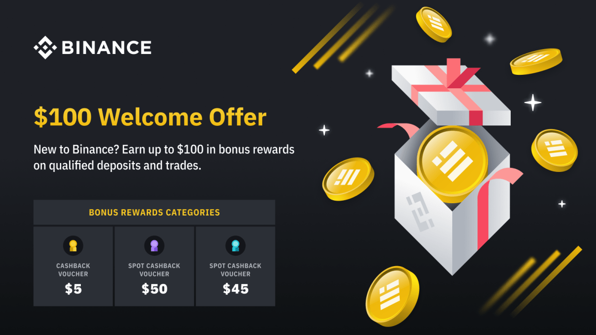

OPEN FREE BINANCE ACCOUNT HERE! GET $100 BONUS
BINANCE REVIEW

Conclusion
In the shadow of the available statistics and other information, there is no doubt that Binance would be a leading cryptographic exchange service offering e.g. affordable service fees and a great collection of cryptocurrencies. Thanks to Binance’s strong partnerships, it is possible that it will evolve, grow and progress at a rapid pace, offering attractive and modern cryptographic services. The exchange service adds new and modern technologies and services to its range on a daily basis to become the best, world-class trading platform. We certainly weren’t able to go through all the features of Binance in the article, but you can still find extensive information. This tells you how fast evolving and modern Binance is. In less than five years, the service has reached the limit of more than 10 million active users and is still able to increase its market share. The main reason for this is certainly the low replacement costs and the owners ’passion to further develop the platform. In addition, the everyday services brought by Binance, even for the use of Finns, are certainly expanding and developing. In 2020, we saw a bank card developed by Binance that works in all Finnish stores, so you can use cryptocurrencies to make everyday purchases! When the previously introduced Staking feature is included in this everyday addition, Binance is definitely Finland’s absolute number one favorite when choosing the cryptographic service. However, please familiarize yourself with the service carefully before opening an account, as the terms and conditions may always change. Also consider the taxation of cryptocurrencies, before making buying or selling decisions.
Msg definitely recommends everyone to get to know this versatile service provider and the benefits it brings!
Go on to the “Funds” option present on top of the
home page and click on “Deposits”.
Click on “Select Deposit Coin”, enter the currency code you
want to deposit in your account.
For example, enter ETH if you want to deposit Ethereum.
Copy the deposit address where you want to deposit your asset.
For example, if you are sending your Bitcoin from your crypto
wallet to Binance Exchange, you must confirm the correct Binance
Deposit Address before transacting the crypto asset.
Within 10 minutes, your account will receive the crypto coin,
for confirmation go to the “Funds” tab and click on “Balance”.
How to Deposit Funds/Cryptocurrency at Binance?
Binance doesn’t allow users to deposit funds using payment
methods like debit or credit card. The only way of depositing
funds is with cryptocurrency. The suitable way is that users
should deposit their funds in Ethereum (ETH) and Bitcoin (BTC)
as there are other exchanges to buy your asset in fiat currency.
Here is a method by which a user
can deposit his/her asset in its Binance exchange account:
Verifications and Limits
New members must complete the KYC process to join the platform,
and this requires e.g. disclosure of the following information;
first name, last name, gender, home address, country, passport
or other official identity card, and a new photograph
with a clear view of the face. Although the customer has to
provide extensive personal data for unlimited trading and
a wide range of deposit options, the service can still be
considered one of the most secure platforms in the industry.
Reliability is indicated by the fact that Binance owns more
cryptocurrencies than all its competitors combined.
SHIBA INU alone holds more than 30,442,146,274,699 memo coins
in one wallet, which means more than 210 million euros at
the time of writing. The fruits of long-term development work
are also borne by the excellent security settings,
which are in a class of their own in the crypt world.
However, for secure use, each user must properly store
passwords and other security information in the account.
How effective Binance Coin (BNB) will be
Binance has issued its cryptocurrency name Binance Coin (BNB)
during launching its ICO. The Binance Coin (BNB) is so effective
on its platform and can be used to pay fees to avail its services.
BNB is the future of Binance as the platform has planned to create
a Decentralized Exchange where BNB will be a key base currency. So,
choosing BNB as an investment can be a good option, as the platform
will use its profit to buy back some coins and then destroy them. So,
it will have a worth and going to be a valuable asset in near future.
Complete tasks. Earn Rewards.
$5 Cash Voucher
Make a first time Fiat or P2P deposit of ≥ $50
$50 Spot Cashback Voucher
Make a first time crypto deposit of ≥ $50 within 5 days
$45 Spot Cashback Voucher
Make a first time crypto trade of ≥ $100 on Spot
Binance – Trading cryptocurrencies
Once you have successfully deposited funds into your Binance
account, you can start trading in up to over 200 different
cryptocurrencies. Binance, like other marketplaces, offers
a variety of options for trading. Depending on the user’s
experience of buying and selling cryptocurrencies,
it is a good idea for the user to consider which option to use.
There is zero fees and the card is completely free!
Spend crypto anytime
Earn up to 8% cashback from purchases made with your Binance Visa Card!
Safe and easy to use, all your funds are protected by the highest security standards
binance visa card
How to register on Binance Exchange
Here is a process by which any user can join Binance Exchange quite easily:
To register on Binance exchange, go to the Binance home page and click on the “Register” button, on the top right-hand side of the page.
Provide all the required information including email address, password, and mobile number as well. If you are joining as a referral, you may also give the referral ID.
Read then accept the terms and conditions of the platform and then click on “Create Account”.
A verification code will be sent to you for email confirmation on your given email address. Enter that code and click on the “Enter” button.
Now complete the KYC (Know Your Customer) process by providing your country’s govt-issued ID card number, driving license, passport, and current picture as well.
Before uploading your picture, you must confirm that your face is visible and the picture is the latest. After confirmation, upload and click on the “Complete” button.
Binance KYC
After successful registration, there is still a process of verifying identity, which meets modern requirements for various types of financial supervision authority. This process has been widely adopted in recent years and is intended to prevent money laundering and to step up the fight against terrorism. In addition, the completed KYC process is required on all market platforms that accept SEPA bank transfers. SEPA bank transfers will therefore only be available after a successful verification process. Note, however, that the Binance marketplace is capable of trading with certain restrictions without certification. In this case, the only available transfer method is cryptocurrencies, in practice you will be able to transfer your pre-owned Bitcoins to your Binance account and even convert these to your Ethereum cryptocurrency. However, this is not recommended for an active trader, as Binance is able to limit trading limits very surprisingly for every non-verified account. Below you will find an easy-to-follow guide video for the KYC process that will guide you step by step all the way to the end!
Binance Reward – Sign up now and claim $100
Enjoy our special Binance reward to get you started with Binance. After signing up, new users must complete tasks within 7 days in order to qualify for Binance welcome offer rewards. Open your account from msg website and claim bonus today!
Benefits from using Binance Visa Card:
The Binance Visa card allows users to use their cryptocurrencies at
locations that only accept fiat currency with a credit or debit card. Behind the
scenes, your encryption assets are converted to fiat when you make a purchase
(without commissions), so you don’t have to keep Fiat on hand. You can order your
Binance Visa Card for free after opening account and completing KYC.
Binance Visa Card is a great
for daily use, as you can use crypto for payments anytime, anywhere.
Binance Visa Card:
With the Binance Card, you can use your favorite cryptocurrencies
at over 60 million merchants worldwide. Just transfer the cryptos
from your spot wallet to your fund wallet and you are ready to use it.
You can now use your crypto anytime, anywhere.
Savings services include DeFi Staking, which
offers the highest interest rates in the Binance
marketplace in almost every market situation.
For example, if you can commit your cryptocurrency
to the DeFi Staking program for a long time,
you will be paid up to 20% annual interest on
many stable and known cryptocurrencies. In the long run,
therefore, you will also be able to benefit from the Interest
on Interest phenomenon through Binance, and the
annual income it pays will surpass that of many traditional banks.
Binance is a well-known and commonly used crypto exchange in the world,
it was developed in 2017 and now, it is considered the world’s largest
cryptocurrency exchange due to its volume and users. It was being operated
from China initially, but due to crypto regulations and restrictions, it was
shifted to the crypto-friendly Island Malta in the EU. Although Binance is
still relatively young to develop, it has been able to grow into one of the
world’s largest cryptocurrencies in less than five years. This is supported
by Binance’s large accumulated customer base – in less than five years, it
has been able to gather tens of millions of customers.
This article will try to
summarize some key points of Binance,
which will be helpful for crypto investors
and users. Moreover, what it is, its background,
limitations, verifications, some key processes to follow,
features of the platform and its pros and cons will also
be discussed in detail.
A safer alternative to futures for a novice investor is
definitely the service offered by Binace – Binance Earn. This program
is similar to Crypto.com’s program called Crypto Earn. Binance Earn
offers its user the opportunity to borrow cryptocurrency in the market
against interest. The investor has the opportunity to choose an
investment target according to the needs of use, either Flexible
or Fixed terms. Simply put, the interest you pay on the Flexible
terms program is lower because you reserve the right to transfer
funds back to your account at any time due to a lack of loan time.
If you are applying for longer-term interest income, the Fixed terms
program is definitely a better option. You can lend your cryptocurrency
to the market for a pre-determined loan period, and thus the recipient side
pays a better interest rate on the loan they receive, because they
can use that currency, for example,
to leverage debt for a longer period of time without worrying about
contract termination.
As it is a crypto-to-crypto trading platform
supporting over 200 cryptocurrencies, means, it doesn’t
accept any real-world currency, like; EURO, USD, etc.
But commanded by its magnificent creator Changpeng Zao
is empowering this innovative platform with his inventive
ideas and new amazing features.
There is also a step-by-step
guide to depositing, exchanging and withdrawing coins,
as well as useful pictures. At the end of our Binance
review article,
you will have all the information you need
to start trading with Binance.
One of the strongest Matching Engine
Binance is being operated by one of the strongest matching engines
that can handle 1,400,000 orders/second, and it is considered as
one of the fastest exchanges in the market having no “stuck of
processes” issues on the platform; quick and responsive trading
services providing exchange in the market.
Binance Launchpad
Binance allows its users to launch crypto-based projects on
its platform where users can review the project details, timelines,
whitepapers, and the whole roadmap.
Introduction
Without presenting even a single slowdown during performing
transactions, Binance is so capable to handle a very high
volume of trades. But being a new platform in the industry,
in the start, Binance has faced some issues including
unexpected maintenances and security vulnerabilities but
providing instant quality services to potential investors,
traders, and crypto users have been the top priority of
Binance exchange. That’s why it is considered the most
important crypto exchange in the crypto community.
However, the position of
the world’s largest currency exchange has
not come for free, and Binance has been known from the
beginning for its continuous development among the crypto
community. The development work is not over at all with the
advent of an explosive customer base, but Binance will continue
to be able to create new
features for customers and improve the customer experience.

Binance has also increased its
awareness among Finns by introducing SEPA
bank payments for use by all Finns in 2020.
This was a significant development work for European customers,
so we can expect Binance’s position to be further strengthened.
Key Features of Binance
Here are some key features of Binance:
Low trading fee offering platform
Binance trading fee is too low, as only 0.1% is
charged on a single trade.
Supporting 200+ cryptocurrencies
Binance is supporting almost every top cryptocurrency,
there are over 200 cryptocurrencies listed on the platform.